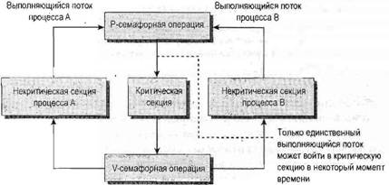
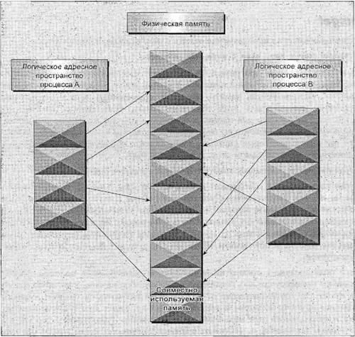

|
||||||||||||||||||||||||
|
|
Глава 14Семафоры, совместно используемая память и очереди сообщений В этой главе мы обсудим набор средств, обеспечивающих взаимодействие процессов и первоначально введенных в версии ОС UNIX AT&T System V.2. Поскольку все эти средства появились в одном выпуске системы и обладают одинаковым программным интерфейсом, их часто называют средствами IPC (Inter-Process Communication, взаимодействие между процессами) или более полно System V IPC. Как вы уже видели, это далеко не единственный способ установления связи между процессами, но термин "System V IPC" обычно применяется для обозначения именно этих конкретных средств. В данной главе мы рассмотрим следующие темы: □ семафоры для управления доступом к ресурсам; □ совместно используемая память для эффективного использования общих данных разными программами; □ обмен сообщениями как легкий способ передачи данных между программами. СемафорыКогда разрабатываются программы для многопользовательских или многозадачных систем или их комбинации, зачастую выясняется, что в программе есть важные разделы программного кода, в которых необходимо обеспечить единственному процессу (или одному потоку исполнения) монопольный доступ к ресурсу. У семафоров сложный программный интерфейс. Но, к счастью, вы сможете предоставить существенно, упрощенный его вариант, достаточный для решения большинства проблем, требующих программирования семафоров. В первом приложении-примере в главе 7, использующем средство dbm для доступа к базе данных, данные могли бы быть повреждены множественными программами, пытавшимися обновить базу данных в одно и то же время. Никакого сбоя не произойдет, если две разные программы запрашивают у двух разных пользователей ввод данных для базы данных, единственная потенциальная проблема кроется в частях программного кода, обновляющих базу данных. Эти секции программы, действительно выполняющие обновления и нуждающиеся в монопольном режиме выполнения, называются критическими секциями. Часто они занимают всего несколько строк кода в гораздо больших по объему программах. Для устранения проблем, вызванных одновременным обращением нескольких программ к совместно используемому ресурсу, вам нужен способ генерации и применения маркера, гарантирующего в любой момент, времени доступ в критическую секцию только одному потоку исполнения. В главе 12 вы вкратце познакомились с ориентированным на потоки использованием мьютексов или семафоров для управления доступом в критические секции многопоточной программы. В этой главе мы вернемся к теме семафоров, но акцентируем внимание на их применении для взаимодействия разных процессов. Примечание Написать программный код общего назначения, который гарантирует одной программе монопольный доступ к конкретному ресурсу, на удивление сложно, несмотря на то, что существует решение, известное как алгоритм Деккера (Dekker's Algorithm). К сожалению, этот алгоритм полагается на состояние активного ожидания или спин-блокировки, в котором процесс выполняется непрерывно, ожидая изменения адреса памяти. В многозадачной среде, какой является ОС Linux, это нежелательные расходы ресурсов ЦПУ. Ситуация существенно облегчается, когда для обеспечения монопольного доступа есть аппаратная поддержка, обычно в виде специальных команд ЦПУ. Примером аппаратной поддержки могла бы быть команда обращения к ресурсу и приращения регистра атомарным образом, так чтобы никакая другая команда (даже прерывание) не могла появиться между операциями чтения/инкремента/записи. Одним из возможных решений проблемы можно считать уже знакомое вам создание файла с помощью флага O_EXCLв функции open, обеспечивающей атомарное создание файла. Этот метод хорош для простых задач, но становится довольно путанным и очень неэффективным при решении более сложных примеров. Важный шаг вперед в сфере параллельного программирования был сделан, когда голландский специалист в области компьютерных наук Эдсгер Дейкстра (Edsger Dijkstra) предложил идею семафоров. Как уже кратко упоминалось в главе 12, семафор — это специальная переменная, которая принимает только целые положительные значения и с помощью которой программы могут действовать только атомарно. В этой главе мы расширим данное ранее упрощенное определение. Будет более подробно рассказано, как действуют семафоры и как для взаимодействия отдельных процессов применяются функции общего назначения вместо особого случая многопоточных программ, которые рассматривались в главе 12. Определяя более строго, семафор — это специальная переменная, для которой разрешены только две операции, формально именуемые ожиданием или приостановкой (wait) и оповещением (signal). Поскольку в программировании Linux у приостановки и оповещения уже есть специальные значения, мы будем применять оригинальное обозначение: □ P(переменная-семафор) для приостановки (wait); □ V(переменная-семафор) для оповещения (signal). Эти буквы взяты из голландских слов для приостановки (passeren — проходить, пропускать как в случае контрольной точки перед критической секцией) и для оповещения (vrijgeven — предоставлять или освобождать, как в случае отказа от контроля критической секции). Вы можете встретить термины "вверх" (up) и "вниз" (down), применяемые в отношении семафоров по аналогии с использованием сигнальных флажков. Описание семафораПростейший семафор — это переменная, способная принимать только значения 0 и 1, бинарный или двоичный семафор. Это наиболее распространенный вид семафора. Семафоры, принимающие много положительных значений, называют семафорами общего вида. В оставшейся части главы мы сосредоточимся на двоичных семафорах. Определения операций Pи Vудивительно просты. Предположим, что у вас есть переменная-семафор sv. В этом случае обе операции определяются так, как представлено в табл. 14.1. Таблица 14.1
Другой способ описания семафора — считать, что переменная sv, равная true, когда доступна критическая секция, уменьшается на единицу с помощью P(sv)и становится равна false, когда критическая секция занята, и увеличивается на единицу операцией V(sv), когда критическая секция снова доступна. Имейте в виду, что обычная переменная, которую вы уменьшаете и увеличиваете на единицу, не годится, т.к. в языках С, С++, C# или практически в любом традиционном языке программирования у вас нет возможности сформировать единую атомарную операцию, проверяющую, равна ли переменная true, и если это так, изменяющую ее значение на false. Именно эта функциональная возможность делает операции с семафором особенными. Теоретический примерС помощью простого теоретического примера можно посмотреть, как действует семафор. Предположим, что у вас есть два процесса: proc1 и proc2, оба нуждающиеся в некоторый момент выполнения в монопольном доступе к базе данных. Вы определяете один бинарный семафор sv, который стартует со значением 1 и доступен обоим процессам. Далее обоим процессам нужно выполнить одну и ту же обработку для доступа к критической секции программного кода; эти два процесса могут быть двумя разными выполняющимися экземплярами одной и той же программы. Оба процесса совместно используют переменную-семафор sv. Как только один процесс выполнил операцию P(sv), он получил семафор и может войти в критическую секцию программы. Второму процессу вход в критическую секцию запрещен, т.к., когда он попытается выполнить операцию P(sv), он вынужден будет ждать до тех пор, пока первый процесс не покинет критическую секцию и не выполнит операцию V(sv), освобождающую семафор. Требуемый псевдокод у обоих процессов идентичен: semaphore sv = 1; loop forever { P(sv); critical code section; V(sv); noncritical code section; } Код на удивление прост, потому что определение операций Pи Vнаделяет их большими функциональными возможностями.  Рис. 14.1 На рис. 14.1 показана схема действующих операций Pи V, напоминающих ворота в критических секциях программного кода. Реализация семафоров в LinuxТеперь, когда вы увидели, что такое семафоры и как они действуют в теории, можно рассмотреть, как их свойства реализованы в ОС Linux. Интерфейс тщательно проработан и предлагает гораздо больше возможностей, чем обычно требуется. Все функции семафоров в Linux оперируют массивами семафоров общего вида, а не одним двоичным семафором. На первый взгляд кажется, что такой подход все усложняет, но если процесс нуждается в блокировке нескольких ресурсов, способность оперировать массивом семафоров — большое подспорье. В этой главе мы сосредоточимся на применении одиночных семафоров, поскольку в большинстве случаев это все, что вам нужно. Далее приведены объявления функций семафоров: #include <sys/sem.h> int semctl(int sem_id, int sem_num, int command, ...); int semget(key_t key, int num_sems, int sem_flags); int semop(int sem_id, struct sembuf *sem_ops, size_t num_sem_ops); Примечание Обратите внимание на то, что параметр keyдействует во многом как имя файла, т.к. он тоже представляет ресурс, который программы могут использовать и кооперироваться при этом, если соблюдают соглашение об общем имени для него. Аналогичным образом идентификатор, возвращаемый функцией semgetи применяемый другими функциями, совместно использующими память, очень похож на файловый поток FILE*, возвращаемый функцией fopenи представляющий собой значение, применяемое процессом для доступа к совместно используемому файлу. Как и в случае файлов, у разных процессов будут разные идентификаторы семафоров, несмотря на то, что они ссылаются на один и тот же семафор. Такое применение ключа и идентификаторов — общее для всех средств IPC, обсуждаемых здесь, несмотря на то, что каждое средство применяет независимые ключи и идентификаторы. semget Функция semgetсоздает новый семафор или получает ключ существующего семафора. int semget(key_t key, int num_sems, int sem_flags); Первый параметр key— целочисленное значение, позволяющее несвязанным процессам обращаться к одному и тому же семафору. Ко всем семафорам осуществляется непрямой доступ с помощью программы, предоставляющей ключ, для которого система затем генерирует идентификатор семафора. Ключ семафора применяется только в функции semget. Все остальные функции семафора используют идентификатор семафора, возвращаемый функцией semget. Существует особое значение ключа семафора IPC_PRIVATE, которое предназначено для создания семафора, доступ к которому получает только процесс-создатель, но такой семафор редко бывает полезен. Для создания нового семафора следует задавать уникальное ненулевое целое число. Параметр num_semsопределяет количество требуемых семафоров. Почти всегда он равен 1. Параметр sem_flags— набор флагов, очень похожих на флаги функции open. Младшие девять байтов — права доступа к семафору, ведущие себя, как права доступа к файлу. Кроме того, для создания нового семафора с помощью поразрядной операции ORих можно объединить со значением IPC_CREAT. Не считается ошибкой наличие флага IPC_CREATи задание ключа существующего семафора. Флаг IPC_CREATбезмолвно игнорируется, если в нем нет нужды. Можно применять флаги IPC_CREATи IPC_EXCLдля гарантированного получения нового уникального семафора. Если семафор уже существует, функция вернет ошибку. Функция semgetвернет в случае успеха положительное (ненулевое) значение, представляющее собой идентификатор, применяемый остальными функциями семафора. В случае ошибки возвращается -1. semop Функция semop применяется для изменения значения семафора. int semop(int sem_id, struct sembuf *sem_ops, size_t num_sem_ops); Первый параметр sem_id— идентификатор семафора, возвращенный функцией semget. Второй параметр sem_ops— указатель на массив структур, у каждой из которых есть, по крайней мере, следующие элементы: struct sembuf { short sem_num; short sem_op; short sem_flg; } Первый параметр sem_num— номер семафора, обычно 0, если вы не работаете с массивом семафоров. Элемент sem_op— значение, на которое должен изменяться семафор. (Вы можете увеличивать и уменьшать семафор на значения, не равные 1.) Как правило, применяются только два значения: -1 для операции P, заставляющей ждать, пока семафор не станет доступен, и +1 для операции V, оповещающей о том, что в данный момент семафор доступен. Последний элемент sem_flgобычно задается равным SEM_UNDO. Это значение заставляет операционную систему отслеживать изменения значения семафора, сделанные текущим процессом, и, если процесс завершается, не освободив семафор, позволяет операционной системе автоматически освободить семафор, если он удерживался этим процессом. Хорошо взять за правило установку sem_flg, равным SEM_UNDO, если вам не требуется иного поведения. Если же вы все-таки решили, что вам нужно значение, отличное от SEM_UNDO, очень важно быть последовательным, иначе вы можете оказаться в замешательстве относительно попыток ядра системы "убрать" ваши семафоры, когда ваш процесс завершается. Все действия, предусмотренные semop, собраны вместе, чтобы избежать состояния гонок, вызванного использованием множественных семафоров. Все подробности функционирования semopможно найти на страницах интерактивного справочного руководства. semctl Функция semctlпозволяет напрямую управлять данными семафора.
Первый параметр sem_id — идентификатор семафора, полученный от функции semget. Параметр sem_num— номер семафора. Он применяется при работе с массивом семафоров. Обычно этот параметр равен 0, первый и единственный семафор. Параметр command— предпринимаемое действие, и четвертый параметр, если присутствует, — union(объединение) типа semun, которое в соответствии со стандартом X/Open должно содержать как минимум следующие элементы: union semun { int val; struct semid_ds *buf; unsigned short *array; } В большинстве версий ОС Linux определение объединения semunвключено в заголовочный файл (обычно sem.h), несмотря на то, что стандарт X/Open настаивает на том, что вы должны привести собственное объявление. Если вы поймете, что должны объявить его самостоятельно, проверьте, нет ли объявления этого объединения на страницах интерактивного справочного руководства, относящихся к функции semctl. Если вы найдете его, мы полагаем, что вы примените определение из вашего справочного руководства, даже если оно отличается от приведенного на страницах этой книги. Существует множество разных значений параметра command, допустимых в функции semctl. Обычно применяются два из них, которые описаны далее. Более подробную информацию о функции semctlсм. в интерактивном справочном руководстве. Два часто используемых значения commandтаковы: □ SETVAL— применяется для инициализации семафора с заданным значением. Это значение передается как элемент valобъединения semun. Такое действие необходимо для того, чтобы увеличить значение семафора перед первым его применением; □ IPC_RMID— применяется для удаления идентификатора семафора, когда он больше не нужен. Функция semctlвозвращает разные значения, зависящие от параметра command. Если значение команды — IPC_RMID, функция в случае успешного завершения вернет 0 и -1 в противном случае. Применение семафоровКак видно из содержания предыдущих разделов, операции с семафорами могут быть очень сложными. Это не самое печальное, потому что программирование многих процессов или потоков с критическими секциями — очень трудная задача сама по себе, и наличие сложного программного интерфейса лишь увеличивает интеллектуальную нагрузку. К счастью, большинство задач, нуждающихся в семафорах, можно решить, применяя единственный бинарный семафор — простейший тип семафора. В следующем примере (упражнение 14.1) вы используете полный программный интерфейс для создания очень простого интерфейса типа Р и V для бинарного семафора. Затем вы примените этот простенький интерфейс для демонстрации того, как функционируют семафоры. В экспериментах с семафорами будет использоваться единственная программа sem1.с, которую вы сможете запускать несколько раз. Необязательный параметр будет применяться для того, чтобы показать, отвечает ли программа за создание и уничтожение семафора. Вывод двух разных символов будет обозначать вход в критическую секцию и выход из нее. Программа, запущенная с параметром, выводит Xпри входе в критическую секцию и выходе из нее. Другие экземпляры запущенной программы будут выводить символ Опри входе в свои критические секции и выходе из них. Поскольку в любой заданный момент времени только один процесс способен войти в свою критическую секцию, все символы Xи Oдолжны появляться парами. Упражнение 14.1. Семафоры 1. После системных директив #includeвы включаете файл semun.h. Он определяет объединение типа semunв соответствии со стандартом X/Open, если оно уже не описано в системном файле sys/sem.h. Далее следуют прототипы функций и глобальная переменная, расположенные перед входом в функцию main. В ней создается семафор с помощью вызова semget, который возвращает ID семафора. Если программа вызывается первый раз (т.е. вызывается с параметром и argc > 1), выполняется вызов set_semvalueдля инициализации семафора и переменной op_charприсваивается значение O. #include <unistd.h> #include <stdlib.h> #include <stdio.h> #include <sys/sem.h> #include "semun.h" static int set_semvalue(void); static void del_semvalue(void); static int semaphore_p(void); static int semaphore_v(void); static int sem_id; int main(int argc, char *argv[]) { int i; int pause_time; char op_char = 'О'; srand((unsigned int)getpid()); sem_id = semget((key_t)1234, 1, 0666 | IPC_CREAT); if (argc >1) { if (!set_semvalue()) { fprintf(stderr, "Failed to initialize semaphore\n"); exit(EXIT_FAILURE); } op_char = 'X'; sleep(2); } 2. Далее следует цикл, в котором 10 раз выполняется вход в критическую секцию и выход из нее. Вы сначала выполняете вызов функции semaphore_p, которая заставляет семафор ждать, когда эта программа будет готова войти в критическую секцию. for (i = 0; i < 10; i++) { if (!semaphore_p()) exit(EXIT_FAILURE); printf("%c", op_char); fflush(stdout); pause_time = rand() % 3; sleep(pause_time); printf("%c", op_char); fflush(stdout); 3. После критической секции вы вызываете функцию semaphore_v, которая освобождает семафор перед повторным проходом цикла forпосле ожидания в течение случайного промежутка времени. После цикла выполняется вызов функции del_semvalueдля очистки кода. if (!semaphore_v()) exit(EXIT_FAILURE); pause_time = rand() % 2; sleep(pause_time); } printf("\n%d - finished\n", getpid()); if (argc > 1) { sleep(10); del_semvalue(); } exit(EXIT_SUCCESS); } 4. Функция set_semvalueинициализирует семафор с помощью команды SETVALв вызове semctl. Это следует сделать перед использованием семафора. static int set_semvalue(void) { union semun sem_union; sem_union.val = 1; if (semctl(sem_id, 0, SETVAL, sem_union) == -1) return(0); return(1); } 5. У функции del_semvalueпочти та же форма за исключением того, что в вызове semctlприменяется команда IPC_RMIDдля удаления ID семафора. static void del_semvalue(void) { union semun sem_union; if (semctl(sem_id, 0, IPC_RMID, sem_union) == -1) fprintf(stderr, "Failed to delete semaphore\n"); } 6. Функция semaphore_p изменяет счетчик семафора на -1. Это операция ожидания или приостановки процесса. static int semaphore_p(void) { struct sembuf sem_b; sem_b.sem_num = 0; sem_b.sem_op = -1; /* P() */ sem_b.sem_flg = SEM_UNDO; if (semop(sem_id, &sem_b, 1) == -1) { fprintf(stderr, "semaphore_p failed\n"); return(0); } return(1); } 7. Функция semaphore_vаналогична за исключением задания элемента sem_opструктуры sembuf, равного 1. Это операция "освобождения", в результате которой семафор снова становится доступен. static int semaphore_v(void) { struct sembuf sem_b; sem_b.sem_num = 0; sem_b.sem_op = 1; /* V() */ sem_b.sem_flg = SEM_UNDO; if (semop(sem_id, &sem_b, 1) == -1) { fprintf(stderr, "semaphore_v failed\n"); return(0); } return(1); } Обратите внимание на то, что эта простая программа разрешает существование единственного двоичного семафора для каждой программы, хотя можно было бы увеличить количество, передав переменную семафора при необходимости. Обычно одного бинарного семафора достаточно. Вы можете протестировать вашу программу, запустив ее несколько раз. В первый раз вы передадите параметр, чтобы сообщить программе о том, что она отвечает за создание и удаление семафора. У других экземпляров выполняющейся программы не будет параметра. Далее приведен примерный вывод для двух запущенных экземпляров программы: $ cc sem1.с -о sem1 $ ./sem1 1 & [1] 1082 $ ./sem1 OOXXOOXXOOXXOOXXOOXXOOOOXXOOXXOOXXOOXXXX 1083 - finished 1082 - finished Напоминаем, что символ Опредставляет первый запущенный экземпляр программы, а символ X— второй экземпляр выполняющейся программы. Поскольку каждый экземпляр программы выводит символ при входе в критическую секцию и при выходе из нее, каждый символ должен появляться только попарно. Как видите, символы Ои Хна самом деле образуют пары, указывая на корректную обработку критических секций. Если программа не работает на вашей системе, можно применить команду stty -tostopперед запуском программы, чтобы гарантировать, что фоновая программа, генерирующая вывод на tty, не вызывает возбуждение сигнала. Как это работает Программа начинается с получения обозначения семафора на основе ключа (произвольного), который вы выбрали, применив функцию semget. Флаг IPC_CREATприводит к созданию семафора, если он нужен. Если у программы есть параметр, она отвечает за инициализацию семафора, которая выполняется функцией set_semvalue, упрощенным вариантом функции общего назначения semctl. Она также использует наличие параметра для определения символа вывода. Функция sleepпросто предоставляет некоторое время для запуска других экземпляров программы до того, как данная программа выполнит слишком много проходов своего цикла. Для включения в программу нескольких псевдослучайных промежутков времени вы используете функции srandи rand. Далее программа выполняет 10 раз операторы тела цикла с псевдослучайными периодами ожидания в своей критической и некритической секциях. Критическая секция охраняется вызовами ваших функций semaphore_pи semaphore_v, упрощенных интерфейсов функции более общего вида semop. Перед удалением семафора программа, запущенная с параметром, ждет, пока завершится выполнение других экземпляров программы. Если семафор не удален, он будет продолжать существовать в системе, даже если нет программ, его использующих. В реальных программах очень важно убедиться в том, что вы случайно не оставили семафор после завершения выполнения. Он может вызвать проблемы при следующем запуске программы, кроме того, семафоры — разновидность ограниченных ресурсов, которые вы должны беречь. Совместно используемая памятьСовместно используемая или разделяемая память — вторая разновидность средств IPC. Она позволяет двум несвязанным процессам обращаться к одной и той же логической памяти. Хотя стандарт X/Open не требует этого, надо полагать, что большинство реализаций разделяемой памяти размещают память, совместно используемую разными процессами, так, что она ссылается на одну и ту же физическую память. Совместно используемая память — это специальный диапазон адресов, создаваемых средствами IPC для одного процесса и включаемых в адресное пространство этого процесса. Другой процесс может затем "присоединить" тот же самый сегмент совместно используемой памяти к своему адресному пространству. Все процессы могут получать доступ к участкам памяти так, как будто эта память была выделена функцией malloc. Если один процесс записывает в совместно используемую память, изменения немедленно становятся видимыми любому другому процессу, имеющему доступ к этой совместно используемой памяти. Совместно используемая память обеспечивает эффективный способ разделения и передачи данных между разными процессами. Сама по себе совместная используемая память не предоставляет никаких средств синхронизации, поэтому вы, как правило, вынуждены применять некоторые другие механизмы для синхронизации доступа к совместно используемой памяти. Обычно совместно используемая память применяется для обеспечения эффективного доступа к обширным областям памяти, а для синхронизации доступа к ней передаются небольшие сообщения. Не существует автоматических средств для того, чтобы помешать второму процессу начать считывание совместно используемой памяти до того, как первый процесс закончит запись в нее. За синхронизацию доступа отвечает программист. На рис. 14.2 показан принцип работы совместно используемой памяти. Рис. 14.2 Стрелки показывают отображение логического адресного пространства каждого процесса на доступную физическую память. На практике ситуация сложнее, потому что доступная память на самом деле представляет собой смесь физической памяти и страниц памяти, которые были выгружены на диск. Функции для работы с совместно используемой памятью напоминают функции семафоров: #include <sys/shm.h> void *shmat(int shm_id, const void *shm_addr, int shmflg); int shmctl(int shm_id, int cmd, struct shmid_ds *buf); int shmdt(const void *shm_addr); int shmget(key_t key, size_t size, int shmflg); Как и в случае семафоров, заголовочные файлы sys/types.h и sys/ipc.h автоматически включаются в программу файлом shm.h. shmgetСоздается совместно используемая память с помощью функции shmget:
Как и для семафоров, программа предоставляет key, фактически именующий сегмент совместно используемой памяти, а функция shmgetвозвращает идентификатор совместно используемой памяти, который применяется всеми последующими функциями для работы с этой областью памяти. Есть особое значение ключа IPC_PRIVATE, создающее для процесса частную, скрытую от других совместно используемую память. Обычно вы не будете пользоваться этим значением, да и кроме всего прочего в некоторых системах Linux можете обнаружить, что такая частная разделяемая память на самом деле далеко не частная. Второй параметр sizeзадает требуемый объем памяти в байтах. Третий параметр shmflgсодержит девять флагов прав доступа, которые используются так же, как флаги режима создающихся файлов. Для создания нового сегмента совместно используемой памяти специальный бит, описываемый IPC_CREAT, должен с помощью поразрядной операции ORбыть объединен с правами доступа. Не считается ошибкой задание флага IPC_CREATи передача ключа существующего сегмента совместно используемой памяти. Флаг IPC_CREAT, если в нем нет нужды, беззвучно игнорируется. Флаги прав доступа к совместно используемой памяти очень полезны, поскольку позволяют процессу создать совместно используемую память, в которую могут писать процессы, принадлежащие создателю этой разделяемой памяти, а процессы, созданные другими пользователями, могут только читать этот сегмент памяти. Вы можете использовать этот механизм для обеспечения эффективного доступа к данным только для чтения, поместив их в совместно используемую память без какого- либо риска их повреждения другими пользователями. Если совместно используемая память создана успешно, shmgetвернет неотрицательное целое, идентификатор совместно используемой памяти. В случае аварийного завершения функция вернет -1. shmatКогда вы впервые создаете сегмент совместно используемой памяти, он недоступен ни одному процессу. Для того чтобы обеспечить доступ к совместно используемой памяти, нужно присоединить ее к адресному пространству процесса. Делается это с помощью функции shmat: void *shmat(int shm_id, const void *shm_addr, int shmflg); Первый параметр shm_id— идентификатор совместно используемой области памяти, возвращаемый функцией shmget. Второй параметр shm_addr— адрес, по которому совместно используемая память присоединяется к текущему процессу. Почти всегда его следует задавать пустым указателем, что позволяет системе выбрать адрес для доступа к совместно используемой памяти. Третий параметр shmflg— набор поразрядных флагов. Два возможных значения: SHM_RND, в сочетании с shm_addrуправляющее адресом, по которому присоединяется к процессу совместно используемая память, и SHM_RDONLY, которое делает присоединенную память доступной только для чтения. Очень редко возникает необходимость управлять адресом присоединения совместно используемой памяти. Как правило, следует позволить системе выбрать для вас адрес, поскольку в противном случае приложение станет в значительной степени аппаратно-зависимым. Если вызов shmatзавершился успешно, он вернет указатель на первый байт совместно используемой памяти. В случае аварийного завершения возвращается -1. Наличие доступа для чтения совместно используемой памяти и записи в нее зависит от владельца (создателя сегмента совместно используемой памяти), прав доступа и владельца текущего процесса. Права доступа к совместно используемой памяти подобны правам доступа к файлам. Исключение из этого правила возникает, если выражение shmflg & SHM_RDONLYравно true. В этом случае в совместно используемую память нельзя писать, даже если права доступа предоставляют такую возможность. shmdtФункция shmdtотсоединяет совместно используемую память от текущего процесса. Она принимает указатель на адрес, возвращенный функцией shmat. В случае успеха функция вернет 0, в случае ошибки - -1. Имейте в виду, что отсоединение совместно используемой памяти не уничтожает ее, а только делает эту память недоступной для текущего процесса. shmctlФункции управления совместно используемой памятью (к счастью) гораздо проще аналогичных, но более сложных функций для семафоров: int shmctl(int shm_id, int command, struct shmid_ds *buf); У структуры типа shmid_dsесть, как минимум, следующие элементы: struct shmid_ds { uid_t shm_perm.uid; uid_t shm_perm.gid; mode_t shm_perm.mode; } Первый параметр shm_id— идентификатор, возвращаемый функцией shmget. Второй параметр commandсодержит предпринимаемое действие. Он может принимать три значения, перечисленные в табл. 14.2. Таблица 14.2
Третий параметр buf— указатель на структуру, содержащую режимы и права доступа для совместно используемой памяти. В случае успеха возвращает 0, в случае ошибки — -1. В стандарте X/Open не описано, что произойдет, если вы попытаетесь удалить присоединенный к процессу сегмент совместно используемой памяти. Обычно присоединенный, но удаленный сегмент совместно используемой памяти продолжает функционировать до тех пор, пока не будет отсоединен от последнего процесса. Но поскольку это поведение не задано в стандарте, на него лучше не рассчитывать. Выполните упражнение 14.2. Упражнение 14.2. Совместно используемая памятьПосле знакомства с функциями совместно используемой памяти можно написать программу для их использования. В данном упражнении вы напишите пару программ: shm1.c и shm2.c. Первая (потребитель) создаст сегмент разделяемой памяти и затем отобразит любые данные, записанные в него. Вторая (поставщик) присоединит существующий сегмент совместно используемой памяти и позволит вам ввести данные в этот сегмент. 1. Сначала создайте общий заголовочный файл для описания совместно используемой памяти, которую вы хотите предоставить. Назовите его shm_com.h. #define TEXT_SZ 2048 struct shared_use_st { int written_by_you; char some_text[TEXT_SZ]; }; В файле определена структура, которая будет применяться в обеих программах: потребителе и поставщике. Вы используете флаг written_by_youтипа intдля того, чтобы сообщить потребителю о том, что данные записаны в оставшуюся часть структуры, и произвольно решаете, что необходимо передать до 2 Кбайт текста. 2. Первая программа shm1.c — потребитель. После заголовочных файлов создается сегмент совместно используемой памяти (размер равен вашей структуре, описывающей совместно используемую память) с помощью вызова shmgetс заданным битом IPC_CREAT. #include <unistd.h> #include <stdlib.h> #include <stdio.h> #include <string.h> #include <sys/shm.h> #include "shm_com.h" int main() { int running = 1; void *shared_memory = (void *)0; struct shared_use_st *shared_stuff; int shmid; srand((unsigned int)getpid()); shmid = shmget((key_t)1234, sizeof(struct shared_use_st), 0666 | IPC_CREAT); if (shmid == -1) { fprintf(stderr, "shmget failed\n"); exit(EXIT_FAILURE); } 3. Теперь вы делаете совместно используемую память доступной программе. shared_memory = shmat(shmid, (void *)0, 0); if (shared memory == (void *)-1) { fprintf(stderr, "shmat failed\n"); exit(EXIT_FAILURE); } printf("Memory attached at %X\n", (int)shared_memory); 4. В следующем фрагменте программы сегмент shared_memoryприсваивается переменной shared_stuff, из которой затем выводится любой текст, содержащийся в some_text. Цикл продолжает выполняться до тех пор, пока не найдена строка endв элементе some_text. Вызов функции sleepзаставляет программу-потребителя оставаться в своей критической секции, что вынуждает поставщика ждать. shared_stuff = (struct shared_use_st *)shared_memory; shared_stuff->written_by_you = 0; while (running) { if (shared_stuff->written_by_you) { printf("You wrote: %s", shared_stuff->some_text); sleep(rand() % 4); /* Заставляет другой процесс ждать нас! */ shared_stuff->written_by_you = 0; if (strncmp(shared_stuff->some_text, "end", 3) == 0) { running = 0; } } } 5. В заключение совместно используемая память отсоединяется и удаляется. if (shmdt(shared_memory) == -1) { fprintf(stderr, "shmdt failed\n"); exit(EXIT_FAILURE); } if (shmctl(shmid, IPC_RMID, 0) == -1) { fprintf(stderr, "shmctl(IPC_RMID) failed\n"); exit(EXIT_FAILURE); } exit(EXIT_SUCCESS); } 6. Вторая программа shm2.c — поставщик; она позволяет вводить данные для потребителей. Программа очень похожа на shm1.c и выглядит следующим образом. #include <unistd.h> #include <stdlib.h> #include <stdio.h> #include <string.h> #include <sys/shm.h> #include "shm_com.h" int main() { int running = 1; void *shared_memory = (void *)0; struct shared_use_st *shared_stuff; char buffer[BUFSIZ]; int shmid; shmid = shmget((key_t)1234, sizeof(struct shared_use_st), 0666 | IPC_CREAT); if (shmid == -1) { fprintf(stderr, "shmget failed\n"); exit(EXIT_FAILURE); } shared_memory = shmat(shmid, (void *)0, 0); if (shared_memory == (void *)-1) { fprintf(stderr, "shmat failed\n"); exit(EXIT_FAILURE); } printf("Memory attached at %X\n", (int)shared_memory); shared_stuff = (struct shared_use_st *)shared_memory; while (running) { while (shared_stuff->written_by_you == 1) { sleep(1); printf("waiting for client...\n"); } printf("Enter same text: "); fgets(buffer, BUFSIZ, stdin); strncpy(shared_stuff->some_text, buffer, TEXT_SZ); shared_stuff->written_by_you = 1; if (strncmp(buffer, "end", 3) == 0) { running = 0; } } if (shmdt(shared_memory) == -1) { fprintf(stderr, "shmdt failed\n"); exit(EXIT_FAILURE); } exit(EXIT_SUCCESS); } Когда вы выполните эти программы, то получите образец вывода, подобный следующему: $ ./shm1 & [1] 294 Memory attached at 40017000 $ ./shm2 Memory attached at 40017000 Enter some text: hello You wrote: hello waiting for client... waiting for client... Enter some text: Linux! You wrote: Linux! waiting for client... waiting for client... waiting for client... Enter some text: end You wrote: end $ Как это работает Первая программа shm1 создает сегмент совместно используемой памяти и затем присоединяет его к своему адресному пространству. Вы накладываете структуру shared_use_stна начальную область совместно используемой памяти. У нее есть флаг written_by_you, который устанавливается, когда данные доступны. Если флаг установлен, программа считывает текст, выводит его и сбрасывает флаг, чтобы показать, что данные прочитаны. Для корректного выхода из цикла примените специальную строку end. Далее программа отсоединяет сегмент совместно используемой памяти и удаляет его. Вторая программа shm2 получает и присоединяет тот же самый сегмент совместно используемой памяти, поскольку она применяет тот же ключ 1234. Затем она просит пользователя ввести текст. Если флаг written_by_youустановлен, shm2 знает, что клиентский процесс еще не считал предыдущую порцию данных и ждет завершения чтения. Когда другой процесс очищает флаг, shm2 записывает новые данные и устанавливает флаг. Она также пользуется магической строкой endдля завершения записи и отсоединения сегмента совместно используемой памяти. Обратите внимание на то, что вы вынуждены с помощью флага written_by_youпредоставить собственный очень грубый механизм синхронизации, который включает очень неэффективное активное ожидание (с непрерывным циклом). Такой подход сохраняет простоту примера, но в реальных программах вам следует применить семафор либо передать сообщение с помощью неименованного канала или сообщений IPC (которые будут обсуждаться в следующем разделе), либо сгенерировать сигнал (как показано в главе 11), чтобы обеспечить более эффективный механизм синхронизации между читающей и пишущей частями приложения. Очереди сообщенийТеперь рассмотрим третье и последнее средство System V IPC: очереди сообщений. Во многом очереди сообщений похожи на именованные каналы, но без сложностей, сопровождающих открытие и закрытие канала. Однако применение очереди сообщений не избавляет вас от проблем, возникающих при использовании именованных каналов, например блокировки заполненных каналов. Очереди сообщений предоставляют очень легкий и эффективный способ передачи данных между двумя несвязанными процессами. У них есть преимущество по сравнению с именованными каналами, заключающееся в том, что очередь сообщений существует независимо как от отправляющего, так и от принимающего процессов, что устраняет некоторые трудности, возникающие при синхронизации открытия и закрытия именованных каналов. Очереди сообщений обеспечивают отправку блока данных из одного процесса в другой. Кроме того, каждый блок данных наделяется типом, и принимающий процесс может получать независимо блоки данных, имеющие разные типы. Хорошо и то, что, отправляя сообщения, вы можете почти полностью избежать проблем синхронизации и блокировки, связанных с именованными каналами. Еще лучше то, что вы можете проявить предусмотрительность в отношении неотложных в том или ином смысле сообщений. К недостаткам следует отнести то, что, как и в случае каналов, в системе существует ограничение максимального объема блока данных и максимального объема всех блоков данных во всех очередях. Наложив эти ограничения, стандарт X/Open не позаботился о способе выяснения их числовых значений за исключением того, что превышение ограничений — достаточное основание для аварийного завершения функций обработки очереди сообщений. В ОС Linux есть два определения: MSGMAXи MSGMNB, которые задают максимальный объем в байтах отдельного сообщения и максимальный объем очереди соответственно. В других системах эти макросы могут отличаться или просто отсутствовать. Далее приведены объявления функций для работы с очередями сообщений: #include <sys/msg.h> int msgctl(int msqid, int cmd, struct msqid_ds *buf); int msgget(key_t key, int msgflg); int msgrcv(int msqid, void *msg_ptr, size_t msg_sz, long int msgtype, int msgflg); int msgsnd(int msqid, const void *msg_ptr, size_t msg_sz, int msgflg); Как и в случае семафоров или совместно используемой памяти, заголовочные файлы sys/types.h и sys/ipc.h обычно автоматически включаются заголовочным файлом msg.h. msggetОчередь сообщений создается и предоставляет к себе доступ с помощью функции msgget: int msgget(key_t key, int msgflg); Программа должна предоставить значение параметра key, которое, как и в других средствах IPC, задает имя конкретной очереди сообщений. С помощью специального значения IPC_PRIVATEсоздается скрытая или частная очередь, которая теоретически доступна только текущему процессу. Как и в случае семафоров и совместно используемой памяти, в некоторых системах Linux такая очередь может не быть частной. Поскольку от скрытой или частной очереди очень мало пользы, это не слишком важная проблема. Как и раньше, второй параметр msgflgсостоит из девяти флагов прав доступа. Для создания новой очереди сообщений специальный бит со значением IPC_CREATдолжен быть объединен с правами доступа поразрядной операцией OR. Не считается ошибкой установка флага IPC_CREATи задание ключа уже существующей очереди сообщений. Если очередь уже есть, флаг IPC_CREATбезмолвно игнорируется. Функция msggetвернет положительное число, идентификатор очереди; в случае успешного завершения и -1 в случае сбоя. msgsndФункция msgsndпозволяет добавить сообщение в очередь сообщений:
Структура сообщения ограничена двумя способами. Во-первых, она должна быть меньше системного ограничения, и во-вторых, она должна начинаться с элемента типа long int, который будет использован как тип сообщения в получающей функции. Если вы применяете сообщения, лучше всего определить структуру сообщения следующим образом. struct my_message { long int message_type; /* Данные, которые вы собираетесь передавать */ } Поскольку элемент message_typeиспользуется при получении сообщения, вы не можете его просто игнорировать. Вы должны включить его в вашу структуру данных, и будет разумно инициализировать его с помощью известного значения. Первый параметр msqid— идентификатор очереди сообщений, возвращаемый функцией msgget. Второй параметр msg_ptr— указатель на отправляемое сообщение, которое должно начинаться с элемента типа long int, как описывалось ранее. Третий параметр msg_sz— объем сообщения, на которое указывает msg_ptr. Этот объем не должен включать элемент типа long int, содержащий тип сообщения. Четвертый параметр msgflgуправляет действиями, предпринимаемыми при заполнении текущей очереди сообщений или достижении общесистемного ограничения для очередей сообщений. Если в параметре msgflgустановлен флаг IPC_NOWAIT, функция вернет управление немедленно без отправки сообщения и возвращаемое значение будет равно -1. Если в параметре msgflgфлаг IPC_NOWAITсброшен, процесс отправки будет приостановлен в ожидании освобождения доступного объема в очереди. В случае успеха функция вернет 0, а в случае аварийного завершения — -1. Если вызов был успешен, копия данных сообщения принимается и помещается в очередь сообщений. msgrcvФункция msgrcvизвлекает сообщения из очереди сообщений: int msgrcv(int msqid, void *msg_ptr, size_t msg_sz, long int msgtype, int msgflg); Первый параметр msqid— идентификатор очереди сообщений, возвращенный функцией msgget. Второй параметр msg_ptr— указатель на получаемое сообщение, которое должно начинаться с элемента типа long int, как описывалось ранее в функции msgsnd. Третий параметр msg_sz— размер сообщения, на которое указывает msg_ptr, без элемента типа long int, содержащего тип сообщения. Четвертый параметр msgtypeтипа long intпозволяет реализовать простую форму приоритетного получения. Если значение msgtypeравно 0, извлекается первое доступное сообщение в очереди. Если значение параметра больше нуля, извлекается первое сообщение с таким же типом сообщения. Если оно меньше нуля, извлекается первое сообщение с таким же типом сообщения или со значением, по абсолютной величине меньшим, чем msgtype. На практике все гораздо проще. Если вы просто хотите получать сообщения в порядке их отправления, задайте msgtype, равным 0. Если нужно извлекать сообщения только с определенным типом, задайте msgtype, равным этому значению. Если вам необходимо получать сообщения с типом не превышающим n, задайте msgtype, равным -n. Четвертый параметр msgflgуправляет действиями в случае отсутствия сообщения подходящего типа, которое ожидает извлечения. Если в параметре msgflgустановлен флаг IPC_NOWAIT, вызов вернет управление программе немедленно с возвращаемым значением -1. Если флаг IPC_NOWAITв msgflgсброшен, процесс будет приостановлен в ожидании прибытия сообщения подходящего типа. В случае успешного завершения функция msgrcv вернет количество байтов, помещенных в буфер приема, сообщение копируется в выделяемый пользователем буфер, на который указывает msg_ptr, и данные удаляются из очереди сообщений. В случае ошибки функция вернет -1. msgctlПоследняя функция обработки очереди сообщений msgctlочень похожа на функцию управления для совместно используемой памяти: int msgctl(int msqid; int command, struct msqid_ds *buf); Структура msqid_dsсодержит, как минимум, следующие элементы: struct msqid_ds { uid_t msg_perm.uid; uid_t msg_perm.gid; mode_t msg_perm.mode; } Первый параметр msqid— идентификатор, возвращаемый функцией msgget. Второй параметр commandзадает предпринимаемое действие. Он может принимать три значения, перечисленные в табл. 14.3. Таблица 14.3
В случае успешного завершения возвращает 0, в случае аварийного — -1. Если очередь сообщений удаляется, когда процесс ожидает в функции msgsndили msgrcv, функция отправки или получения сообщения завершается аварийно. Выполните упражнение 14.3. Упражнение 14.3. Очереди сообщенийТеперь, когда вы познакомились с объявлениями, относящимися к очередям сообщений, можно посмотреть, как они действуют на практике. Как и раньше, вы напишите две программы: msg1.c для получения и msg2.c для отправки сообщений. Вы разрешите обеим программам создавать очередь сообщений, но используете для удаления очереди программу-приемник после того, как она получит последнее сообщение. 1. Далее приведена программа-приемник msg1 .с: #include <stdlib.h> #include <stdio.h> #include <string.h> #include <errno.h> #include <unistd.h> #include <sys/msg.h> struct my_msg_st { long int my_msg_type; char some_text[BUFSIZ]; }; int main() { int running = 1; int msgid; struct my_msg_st some_data; long int msg_to_receive = 0; 2. Прежде всего, задайте очередь сообщений: msgid = msgget((key_t)1234, 0666 | IPC_CREAT); if (msgid == -1) { fprintf(stderr, "msgget failed with error: %d\n", errno); exit(EXIT_FAILURE); } 3. Далее сообщения извлекаются из очереди до тех пор, пока не будет обнаружено сообщение end. В конце очередь сообщений удаляется. while (running) { if (msgrcv(msgid, (void *)&some_data, BUFSIZ, msg_to_receive, 0) == -1) { fprintf(stderr, "msgrcv failed with error: %d\n", errno); exit(EXIT_FAILURE); } printf("You wrote: %s", some_data.some_text); if (strncmp(some_data.some_text, "end", 3) == 0) { running = 0; } } if (msgctl(msgid, IPC_RMID, 0) == -1) { fprintf(stderr, "msgctl(IPC_RMID) failed\n"); exit(EXIT_FAILURE); } exit(EXIT_SUCCESS); } 4. Программа-отправитель msg2.c очень похожа на программу msg1.с. В функции main удалите объявление msg_to_receiveи замените его переменной buffer[BUFSIZ]. Уберите из программы удаление очереди и внесите следующие изменения в цикл с управляющей переменной running. Теперь у вас появился вызов функции msgsnd для отправки введенного текста в очередь сообщений. Далее приведена программа msg2.c с отличиями от программы msg1.с, выделенными цветом. #include <stdlib.h> #include <stdio.h> #include <string.h> #include <errno.h> #include <unistd.h> #include <sys/msg.h> #define MAX_TEXT 512 struct my_msg_st { long int my_msg_type; char some_text[MAX_TEXT]; }; int main() { int running = 1; struct my_msg_st some_data; int msgid; char buffer = [BUFSIZ]; msgid = msgget((key_t)1234, 0666 | IPC_CREAT); if (msgid == -1) { fprintf(stderr, "msgget failed with error: %d\n", errno); exit(EXIT_FAILURE); } while (running) { printf("Enter some text: "); fgets(buffer, BUFSIZ, stdin); some_data.my_msg_type = 1; strcpy(some_data.some_text, buffer); if (msgsnd(msgid, (void*)&some_data, MAX_TEXT, 0)) == -1) { fpintf(stderr, "msgsnd failed\n"); exit(EXIT_FAILURE); } if (strncmp(buffer, "end", 3) == 0) { running = 0; } } exit(EXIT_SUCCESS); } В отличие от примера с каналами, процессам нет нужды предоставлять метод их собственной синхронизации. Это существенное преимущество сообщений по сравнению с каналами. Если в очереди сообщений есть место, отправитель может создать очередь, поместить в нее какие-либо данные и завершить выполнение еще до того, как начнет выполняться приемник. Первой следует запускать программу-отправителя msg2. Далее приведен пример вывода: $ ./msg2 Enter some text: hello Enter some text: How are you today? Enter some text: end $ ./msg1 You wrote: hello You wrote: How are you today? You wrote: end Как это работает Программа-отправитель создает очередь сообщений с помощью функции msgget; далее она добавляет сообщения в очередь, применяя функцию msgsnd. Программа-приемник получает идентификатор очереди сообщений с помощью функции msggetи получает сообщения до тех пор, пока не будет найден специальный текст end. Затем программа приводит все в порядок, удаляя очередь сообщений с помощью функции msgctl. Приложение для работы с базой данных компакт-дисковСейчас подходящий момент для модификации вашего приложения, управляющего базой данных компакт-дисков, с помощью средств IPC, с которыми вы познакомились в этой главе. Вы могли бы применить множество разных комбинаций трех разновидностей средств IPC, но поскольку информация, которую следует передавать, очень мала по объему, есть смысл реализовать передачу запросов и ответов непосредственно с помощью очередей сообщений. Если объемы данных, которые вы должны передавать, были бы велики, можно было бы рассмотреть передачу реальных данных в совместно используемой памяти, одновременно применяя семафоры или сообщения для отправки маркера или "опознавательного знака", информирующего другой процесс о наличии данных в совместно используемой памяти. Интерфейс очереди сообщений устраняет проблему, которая у вас была в главе 11, когда вы нуждались в открытом канале у обоих процессов в момент передачи данных. Применение очередей сообщений позволяет одному процессу поместить сообщения в очередь, даже если этот процесс в данный момент — единственный пользователь очереди. Вам нужно ответить лишь на один важный вопрос: как возвращать ответы клиентам? Простым решением было бы наличие одной очереди для сервера и по одной очереди для каждого клиента. Если одновременно существует много клиентов, такой подход может вызвать проблемы, т.к. потребуется большое количество очередей. Используя в сообщении поле идентификатора сообщения, вы сможете разрешить всем клиентам пользоваться одной очередью и адресовать ответные сообщения конкретным клиентским процессам с помощью включенного в сообщение идентификатора клиентского процесса. Далее каждый клиент может извлекать сообщения, адресованные только ему, оставляя сообщения для других клиентов в очереди. Для преобразования приложения, работающего с базой данных компакт-дисков, с помощью средств IPC вам придется заменить только файл pipe_imp.c из сопроводительного программного кода к главе 13. Далее мы рассмотрим важные разделы замещающего файла ipc_imp.c. Пересмотр функций сервераСначала нужно обновить серверные функции. 1. Прежде всего, включите необходимые заголовочные файлы, объявите несколько ключей очередей сообщений и структуру для хранения данных сообщения: #include "cd_data.h" #include "cliserv.h" #include <sys/msg.h> #define SERVER_MQUEUE 1234 #define CLIENT_MQUEUE 4321 struct msg_passed { long int msg_key; /* Используется для клиентского pid */ message_db_t real message; }; 2. Две глобальные переменные хранят идентификаторы двух очередей, возвращаемые функцией msgget: static int serv_qid = -1; static int cli_qid = -1; 3. Сделайте сервер ответственным за создание обеих очередей сообщений: int server starting() { #if DEBUG_TRACE printf("%d :- server_starting()\n", getpid()); #endif serv_qid = msgget((key_t)SERVER_MQUEUE, 0666 | IPC_CREAT); if (serv_qid == -1) return(0); cli_qid = msgget((key_t)CLIENT_MQUEUE, 0666 | IPC_CREAT); if (cli_qid == -1) return(0); return(1); } 4. За удаление очереди, если она существует, также отвечает сервер. Когда сервер заканчивает работу, вы задаете недопустимые значения вашим глобальным переменным. Это позволит выловить любые ошибки при попытке сервера отправить сообщения после вызова функции server_ending: void server_ending() { #if DEBUG_TRACE printf("%d :- server_ending()\n", getpid()); #endif (void)msgctl(serv_qid, IPC_RMID, 0); (void)msgctl(cli_qid, IPC_RMID, 0); servqid = -1; cliqid = -1; } 5. Серверная функция readчитает из очереди сообщение любого типа (т.е. от любого клиента) и возвращает часть сообщения с данными (пропуская тип сообщения): int read_request_from_client(message_db_t *rec_ptr) { struct msg_passed my_msg; #if DEBUG_TRACE printf("%d :- read_request_from_client()\n", getpid()); #endif if (msgrcv(serv_qid, (void *)&my_msg, sizeof(*rec_ptr), 0, 0) == -1) { return(0); } *rec_ptr = my_msg.real_message; return(1); } 6. При отправке сообщения для его адресации используется ID клиентского процесса, хранящийся в запросе: int send_resp_to_client(const message_db_t mess_to_send) { struct msg_passed my_msg; #if DEBUG_TRACE printf("%d :- send_resp_to_client()\n", getpid()); #endif my_msg.real_message = mess_to_send; my_msg.msg_key = mess_to_send.client_pid; if (msgsnd(cli_qid, (void *)&my_msg, sizeof(mess_to_send), 0) == -1) { return(0); } return(1); } Пересмотр функций клиентаТеперь нужно внести изменения в клиентские функции. 1. Когда клиент стартует, ему нужно найти идентификаторы серверной и клиентской очередей. Клиент не создает очереди. Если сервер не работает, эта функция завершится аварийно, поскольку не существует очередей сообщений. int client starting() { #if DEBUG_TRACE printf("%d :- client_starting\n", getpid()); #endif serv_qid = msgget((key_t)SERVER_MQUEUE, 0666); if (serv_qid == -1) return(0); cli_qid = msgget((key_t)CLIENT_MQUEUE, 0666); if (cli_qid == -1) return(0); return(1); } 2. Как и в случае сервера, когда клиент завершает работу, вы задаете некорректные значения глобальных переменных. Это позволит выявить ошибки при попытке клиента отправлять сообщения после вызова функции client_ending. void client_ending() { #if DEBUG_TRACE printf("%d :- client_ending()\n", getpid()); #endif serv_qid = -1; cli_qid = -1; } 3. Для отправки сообщения серверу сохраните данные в своей структуре. Учтите, что вы должны задать ключ сообщения. Поскольку 0 — недопустимое значение для ключа, незаданный ключ означает, что он принимает (очевидно) случайное значение, поэтому иногда эта функция может возвращать ошибку, если значение оказывается нулевым. int send_mess_to_server(message_db_t mess_to_send) { struct msg_passed my_msg; #if DEBUG_TRACE printf("%d send_mess_to_server()\n", getpid()); #endif my_msg.real_message = mess_to_send; my_msg.msg_key = mess_to_send.client_pid; if (msgsnd(serv_qid, (void *)&my_msg, sizeof(mess_to_send) , 0) == -1) { perror("Message send failed"); return(0); } return(1); } 4. При получении сообщения от сервера клиент использует ID процесса для получения только сообщений, адресованных ему, пропуская сообщения, предназначенные другим клиентам. int read_resp_from_server(message_db_t *rec_ptr) { struct msg_passed mymsg; #if DEBUG_TRACE printf("%d :- read_resp_from_server()\n", getpid()); #endif if (msgrcv(cli_qid, (void *)&my_msg, sizeof(*rec_ptr), getpid(), 0) == -1) { return(0); } *rec_ptr = my_msg.real_message; return(1); } 5. Для сохранения совместимости с файлом pipe_imp.c необходимо объявить четыре дополнительные функции. Но в вашей программе они будут пустыми. Операции, которые они реализовывали в случае применения каналов, больше не нужны. int start_resp_to_client(const message_db_t mess_to_send) { return(1); } void end_resp_to_client(void) {} int start_resp_from_server(void) { return(1); } void end_resp_from_server(void) {} Теперь вы можете просто запустить сервер, выполняющий в фоновом режиме реальное сохранение и извлечение данных, и затем выполнить клиентское приложение для подключения к серверу с помощью сообщений. Все, что вы должны сделать, — это заменить интерфейсные функции из главы 11 другой реализацией, применяющей очереди сообщений. Преобразование приложения для использования очередей сообщений показывает мощь этого средства IPC, т.к. вам требуется меньше функций, чем в случае применения каналов, и даже эти необходимые функции гораздо проще, чем в предыдущей версии приложения. Команды состояния IPCНесмотря на то, что для соответствия требованиям X/Open этого не требуется, большинство систем Linux предоставляет набор команд, обеспечивающих доступ к данным IPC в режиме командной строки и удаление потерянных средств IPC. Существуют команды ipcsи ipcrm, очень полезные при разработке программ. Один из досадных недостатков средств IPC состоит в том, что плохо написанная программа или программа, по какой-либо причине завершившаяся аварийно, может оставить свои ресурсы IPC (например, данные в очереди сообщений) еще долго блуждающими в системе без определенной цели после завершения программы. Такое поведение может привести к аварийному завершению нового запуска программы, поскольку она рассчитывает начать выполнение в очищенной системе, а на самом деле находит эти блуждающие ресурсы. Команды состояния ( ipcs) и удаления ( ipcrm) позволяют проверить систему и очистить ее от ненужных средств IPC. Отображение состояния семафораДля проверки состояния семафоров в системе примените команду ipcs -s. Если какие-то семафоры присутствуют, вывод команды будет выглядеть следующим образом: $ ipcs -s ------ Semaphore Arrays ------ key semid owner perms nsems 0x4d00df1a 768 rick 666 1 Для удаления семафоров, случайно оставленных программами, вы можете использовать команду ipcrm. Для удаления только что отображенного семафора примените (в Linux) следующую команду: $ ipcrm -s 768 В некоторых более старых системах Linux используется несколько иной синтаксис команды: $ ipcrm sem 768 Но этот устаревший стиль редко встречается в наше время. Формат, подходящий для вашей конкретной системы, ищите на страницах интерактивного справочного руководства. Отображение состояния совместно используемой памятиМногие системы предоставляют программы режима командной строки для доступа не только к сведениям о семафорах, но и к подробным данным совместно используемой памяти. К ним относятся команды ipcs -mи ipcrm -m <id>(или ipcrm shm <id>). Далее приведен пример вывода команды ipcs -m: $ ipcs -m ------ Shared Memory Segments ------ key shmid owner perms bytes nattch status 0x00000000 384 rick 666 4096 2 dest Здесь показан единственный сегмент совместно используемой памяти объемом 4 Кбайт, присоединенный к двум процессам. Команда ipcrm -m <id>позволяет удалить совместно используемую память. Она бывает полезной, когда программа завершается аварийно при попытке убрать такую память. Отображение состояния очереди сообщенийДля очередей сообщений предназначены команды ipcs -qи ipcrm -q <id> (или ipcrm msg <id>). Далее приведен пример вывода команды ipcs -q: $ ipcs -q ------ Message Queues ------ key msqid owner perms used-bytes messages 0x000004d2 3384 rick 666 2048 2 В нем показаны в очереди сообщений два сообщения общим объемом 2048 байтов. Команда ipcrm -q <id>позволяет удалить очередь сообщений. РезюмеВ этой главе вы познакомились с тремя разновидностями средств взаимосвязи процессов, которые стали широко применяться в ОС UNIX System V.2 и были доступны в системе Linux, начиная с ранних версий ее дистрибутивов. Вы рассмотрели предлагаемые ими сложные функциональные возможности и, после того как поняли принципы их функционирования, оценили обеспечиваемое ими эффективное решение для удовлетворения многих потребностей межпроцессного взаимодействия. |
|
||||||||||||||||||||||
|
Главная | В избранное | Наш E-MAIL | Прислать материал | Нашёл ошибку | Наверх |
||||||||||||||||||||||||
|
|
||||||||||||||||||||||||